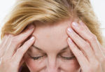
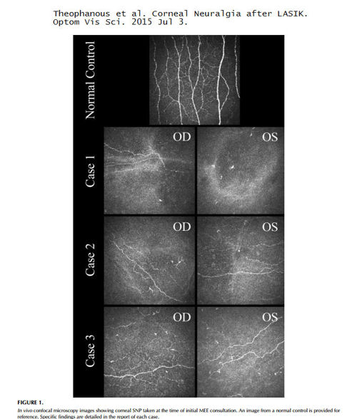
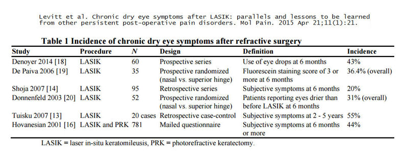

Роговица обладает самой плотной сенсорной иннервацией в организме. Было подсчитано, что роговица содержит в 300-600 раз больше сенсорных окончаний, чем кожа, и в 20-40 раз больше, чем пульпа зуба. Источник: Бельмонте, Карлос; Галлар Хуана (1996). "6. Ноцицепторы роговицы". Нейробиология ноцицепторов Издательство Оксфордского университета .Во время операции LASIK нервы в передней части роговицы перерезаются во время создания лоскута, а более глубокие нервы роговицы разрушаются при лазерной абляции. Медицинские исследования показывают, что после операции LASIK нервы роговицы не восстанавливают нормальную плотность и структуру (читать здесь и здесь ). Некоторые пациенты сообщают о тяжелой, постоянная боль в глазах после операции LASIK . Боль в глазах после LASIK часто диагностируется как сухость глаз, но в некоторых случаях это может быть не просто сухость глаз. Конфокальная микроскопия глаз после LASIK выявляет аномальную регенерацию нервных волокон в роговице, что может привести к невралгия роговицы (боль). У некоторых пациентов боль в глазах после операции LASIK выводит из строя и приводит к мыслям о самоубийстве.
Пациенты, которые испытывают постоянную боль в глазах или другие осложнения после операции LASIK, негативно влияющие на качество жизни, должны отправьте отчет о медицинском наблюдении с Управлением по санитарному надзору за качеством пищевых продуктов и медикаментов в режиме онлайн. Кроме того, вы можете позвонить в Управление по санитарному надзору за качеством пищевых продуктов и медикаментов по телефону 1-800-FDA-1088, чтобы сообщить об этом по телефону. бумажный бланк и либо отправьте его по факсу на номер 1-800-FDA-0178, либо отправьте по почте на адрес, указанный внизу страницы 3, либо загрузите Мобильное приложение MedWatcher для сообщения о проблемах с LASIK в FDA с помощью смартфона или планшета. Ознакомьтесь с образцом Отчеты о травмах, полученных с помощью LASIK в настоящее время находится на рассмотрении в FDA.
Если вы страдаете от боли или других осложнений после лазерной операции на глазу, мы приглашаем вас присоединяйтесь к обсуждению на FaceBook
Исследование, проведенное академическими учеными, показало, что 11% пациентов жалуются на ПОСТОЯННУЮ БОЛЬ после LASIK и ФРК - июль 2023
Частота глазных болей увеличилась после операций LASIK и PRK до 23% через 3 месяца и 24% через 6 месяцев. Одиннадцать процентов пациентов жаловались на постоянную боль в течение 3 и 6 месяцев.
Пациенты Lasik MD жалуются на повреждение нервов и подают коллективный иск - Новости CTV от 21.11.2019
Из статьи: По меньшей мере двое канадцев подают в суд на национальную сеть клиник лазерной хирургии глаза и просят других присоединиться к ним после того, как у них развилось редкое и чрезвычайно болезненное осложнение.
Предполагалось, что Кристофер Уэлле и Кристел Терзян смогут лучше видеть после популярной плановой процедуры, но они утверждают, что операция на роговице, проведенная в клинике Lasik MD, вызвала неослабевающую боль в глазах. Уэлле является ведущим истцом в новом, первом в своем роде коллективном иске.
"Это полностью разрушило мою жизнь. Это разрушило все. Из-за этого я потерял работу. Из-за этого я потерял то, что мне нравится делать в жизни", - сказал Уэлле. Он добавил, что временами из-за боли он задумывался о самоубийстве. "Я хочу справедливости, компенсации и хочу, чтобы они заплатили за то, что сделали со мной и другими. И они заплатят".;
Когда рутинная операция на глазу приводит к изнуряющей боли - Wall Street Journal, 7/1/2019
Автор: Бетси Маккей
Из статьи: Кейли Паттерсон проснулась с острой болью в правом глазу на следующее утро после операции Lasik. Она почувствовала тупую боль на одной стороне лица. Обеспокоенная, мисс Паттерсон несколько раз посещала своего хирурга и обычного окулиста в течение следующих нескольких недель. По ее словам, они неоднократно говорили ей, что все выглядит нормально. И все же малейшее движение - дуновение воздуха, луч света - вызывало у нее мучительную боль в голове. "Мне было больно, и никто не помогал мне", - сказала 33-летняя консультант по психическому здоровью. Спустя полтора года после операции мисс Паттерсон, наконец, узнала, почему она страдала. Специалист сообщил ей, что у нее состояние, известное как невропатическая боль в роговице.
Семьи сталкиваются с последствиями серьезных осложнений после лазерной операции на глазу - Новости CTV от 5.04.2019
Из статьи: "Доктор Педрам Хамра лечит пациентов со всего мира в своей клинике в медицинском центре Тафтса в Бостоне. Он считает, что в некоторых случаях "сухость глаз" на самом деле является состоянием, называемым невралгией роговицы - сильной болью, вызванной повреждением нервов в роговице.Это состояние часто упускается из виду, поскольку стандартные диагностические инструменты не предназначены для выявления проблемы. В результате у пациентов с "невралгией роговицы" роговица может казаться нормальной, пояснил он. Когда команда доктора Хамры использует мощный конфокальный микроскоп in vivo для получения изображений роговицы с высоким разрешением, повреждение становится очевидным. По его словам, часто нервные окончания у пациентов с лазерной офтальмологией выглядят ампутированными или напоминают спутанный клубок пряжи. Эти аномальные нервы становятся гиперчувствительными, что проявляется болью, сухостью и чувствительностью к свету. По его словам, нервные окончания ампутированы или напоминают спутанный клубок пряжи. Эти аномальные нервы становятся сверхчувствительными, что проявляется болью, сухостью и чувствительностью к свету."
CTV W5 исследует невралгию роговицы после операции на глазу LASIK - 20 октября 2018 г.
Из статьи: "Но исследование W5 выявило небольшую, но все более громогласную группу пациентов, которые утверждают, что после операции у них развилось очень редкое осложнение, из-за которого они испытывали хроническую боль, не могли работать и даже подумывали о самоубийстве".;
"Офтальмолог и специалист по роговице доктор Педрам Хамра принимает в своей клинике в медицинском центре Тафтса в Бостоне пациентов со всего мира - многие из них склонны к самоубийству и отчаянно нуждаются в ответах. У них болят глаза, вызванные травмами, болезнями и операциями. У некоторых он развивается после операции по удалению катаракты. Около 20% его пациентов страдают после операции Lasik. Доктор Хамрах говорит, что в некоторых случаях то, что принято называть сухостью глаз, на самом деле является состоянием, называемым невралгией роговицы - сильной болью, вызванной повреждением нервов в роговице.;
Сухость глаз, депрессия и LASIK: серьезные размышления о серьезной проблеме - 25 февраля 2019
Автор: Даррелл Э. Уайт, доктор медицины.
Выдержка: "Я твердо придерживаюсь мнения, что эти пациенты не страдают от обычных заболеваний, связанных с сухостью глаз... Эти люди страдают от нейрогенной боли, так называемой "фантомной сухости глаз". Это нервная боль, вызванная какой-то неправильной передачей сигналов периферическими нервами, которая приводит к нарушению центральной обработки боли. Хроническая боль любого типа является хорошо известной причиной депрессии и может привести к самоубийству. Это пациенты с хронической болью, и к ним следует относиться соответственно."
Ссылка на статью о новостях глазной хирургии в американском издании
Ведущий хирург LASIK признает высокую частоту возникновения болей после операций на глазах - январь 2019
Джей Препос, доктор медицинских наук: "Я думаю, что сейчас мы стали гораздо лучше осведомлены об этом новом синдроме - невропатической боли в роговице. Это может коснуться примерно 19% пациентов после операции по удалению катаракты, что очень похоже на то, что мы слышали о других видах хирургических вмешательств, таких как LASIK, при появлении новых болевых ощущений".;
Медейрос и др. Влияние фоторефракционной кератэктомии и митомицина С на нервы роговицы и их регенерацию. Рефракционная хирургия, 1 декабря 2018 г.;34(12):790-798.
"Морфология регенерирующих нервов после ФРК была ненормальной с большей извилистостью и аберрантной иннервацией по сравнению с дооперационным контролем даже через 6 месяцев после операции".;
Хроническая боль в глазах после операции LASIK, признанной уважаемым офтальмологом-исследователем Гарвардского университета
Доктор Перри Розенталь, доктор медицинских наук является офтальмологом-исследователем из Гарварда, специализирующимся на лечении хронических болей в глазах. Он изучал невропатическую боль в роговице после LASIK и других форм лазерной хирургии глаза и представил свои исследования в рецензируемые офтальмологические журналы для публикации, однако его исследования были отклонены, несмотря на то, что они были проверены ведущими учеными. Крупные офтальмологи пытаются скрыть эту информацию и держать общественность в неведении относительно широко распространенных проблем, связанных с операцией LASIK. Ознакомьтесь с исследованием 21 пациента, у которых после операции LASIK развилась мучительная, неослабевающая боль в глазах, которое АМЕРИКАНСКАЯ АКАДЕМИЯ ОФТАЛЬМОЛОГИИ, по-видимому, не хотела, чтобы вы читали. Читать изучать
Август 2013 года: доктор Розенталь сообщил, что его веб-сайт был взломан. Прочитай Информация, подавленная .
Также читайте: Профессор Гарварда обвиняет CDRH в неспособности защитить пациентов с LASIK
Невропатическая боль в глазу - Новая теория о сухости глаз и невидимом и ранее не замечавшемся синдроме хронической боли в глазах, который доктор Розенталь называет глазно-лицевой болью.
ОБНОВЛЕНИЕ от 3 марта 2018 г.: Доктор Перри Розенталь скончался в возрасте 84 лет. Нам будет его очень не хватать. Доктор Розенталь научил нас, что значит быть врачом. Покойся с миром, доктор Розенталь.
Макмонни, К.У. Потенциальная роль нейропатических механизмов в развитии синдрома сухого глаза. J Optom, 15 июля 2016.
Выдержка: Наиболее распространенной жалобой пациентов, перенесших рефракционную операцию, является сухость глаз, на которую жалуются более 40% из них, особенно после пробуждения. Снижение чувствительности вследствие перерезанных роговичных нервов может помочь объяснить симптомы сухости глаз, возникающие после рефракционной операции. Однако, хотя первоначально считалось, что симптомы кератомилеза in situ после лазерной коррекции были вызваны сухостью глаз и назывались "сухостью глаз", в настоящее время становится все более очевидным, что повреждение нервов роговицы, вызванное этой операцией, напоминает патологическую нейропластичность, связанную с другими формами стойкого послеоперационного кератомилеза. боль. У восприимчивых пациентов эти нейропатологические изменения, включая периферическую и центральную сенсибилизацию, могут лежать в основе некоторых стойких симптомов сухости глаз после рефракционной операции.
"Сухость глаз" связана с хроническими болевыми синдромами. Медицинская школа Миллера при Университете Майами - январь 2016
Выдержка: "По оценкам Американского глазного института, от сухости глаз ежегодно страдают около 3 миллионов американцев. Когда глаза не вырабатывают достаточного количества слез или слезы слишком быстро испаряются с поверхности роговицы, у пациентов возникает "зуд" или болезненное ощущение. При отсутствии лечения сухость глаз может привести к воспалению, язвам или шрамам на роговице. "Глаза пациентов могут стать сверхчувствительными к раздражителям, таким как ветер или свет, или испытывать спонтанную боль, такую как чувство жжения, что обычно связано с повреждением нерва", - сказал Левитт.
Исследование выявило симптомы сухости глаз после процедуры LASIK из-за повреждения нервов, вызванного процедурой - ноябрь 2015 г.
Чао и др. Структурные и функциональные изменения в иннервации роговицы после лазерного кератомилеза in situ и их связь с сухостью глаз. Офтальмологическая клиника Графеса, ноябрь 2015 г.;253(11):2029-39. Источник
Абстрактный
ЦЕЛЬ: Наиболее вероятной причиной сухости глаз после LASIK является повреждение нервов роговицы; однако прямой связи между симптомами сухости глаз после LASIK и повреждением нервов установлено не было, и имеется ограниченная информация о связи между признаками сухости глаз и реиннервацией роговицы после LASIK. Слезные нейропептиды (SP и CGRP) играют важную роль в поддержании здоровья нервов роговицы, но влияние LASIK еще не изучено. В этом исследовании оценивались изменения морфологии нервов, нейропептидов слезы и сухости глаз, чтобы установить взаимосвязь между реиннервацией и сухостью глаз и оценить роль нейропептидов слезы в реиннервации после LASIK.
МЕТОДЫ: В этом исследовании приняли участие двадцать добровольцев с нормальным зрением, перенесших двустороннюю операцию LASIK при миопии. Морфология роговичного нерва (плотность, ширина, взаимосвязи и извитость), концентрация SP и CGRP, а также сухость глаз контролировались в течение 1 дня, 1 недели, 1, 3 и 6 месяцев после операции LASIK.
РЕЗУЛЬТАТЫ: Симптомы сухости глаз и слезная функция, за исключением осмолярности (Р <0,003), остались неизменными после LASIK. Морфология роговичного нерва сразу же снизилась и не вернулась к предоперационному уровню через 6 месяцев после LASIK (P <0,001). Повышенная концентрация слезной жидкости наблюдалась через 3 месяца после операции LASIK (P <0,001). После LASIK была обнаружена связь между реиннервацией, измеряемой по увеличению плотности, и снижением слезоотделения (P <0,03), а также между увеличением плотности и уменьшением симптомов сухости глаз (P <0,01).
заключение: Была обнаружена обратная зависимость между реиннервацией после LASIK и симптомами сухости глаз, подтверждающая, что сухость глаз после LASIK является невропатическим заболеванием. Это исследование является первым, которое продемонстрировало связь между увеличением слезоточивости и реиннервацией после LASIK, предполагая, что стратегии манипулирования концентрацией нейропептидов для улучшения реиннервации могут улучшить зрительный комфорт после LASIK.
Из полного текста: "Симптомы сухости глаз после операции LASIK, скорее всего, связаны с повреждением нервов, вызванным хирургической процедурой".;
Максин Липнер. Сухость после операции LASIK. Зрительный мир Октябрь 2015 года
Выдержка: Очень часто после прохождения процедуры LASIK пациенты жалуются на сухость глаз. По словам Александры Э. Левитт, студентки четвертого курса медицинского университета Майами, данные из литературы показывают, что от 20 до 55% пациентов после операции LASIK имеют хронические симптомы сухости глаз, такие как жгучая боль, чувство раздражения, вызванное жарой или холодом, и чувствительность к свету или ветру.. Однако в некоторых из этих случаев сухость глаз может быть ошибочным описанием. Недавние результаты, опубликованные в апрельском номере журнала Molecular Pain за 2015 год, указывают на то, что существует много совпадений с тем, как пациенты описывают невропатическую боль в других частях тела, сообщила г-жа Левитт...
Лазерная хирургия глаза и хроническая боль от Брин Нельсон на Mosaic Science - 8.09.2015
Карлос Бельмонте, основатель Института неврологии в Аликанте, Испания, и пионер в изучении физиологических основ глазной боли, объясняет, что нервы роговицы не восстанавливаются полностью после операции LASIK. "Основной риск заключается в том, что в очень небольшом проценте случаев эта регенерация является патологической, и тогда вы испытываете невропатическую боль, а это катастрофа", - сказал он. "Но это риск, который возникает при хирургическом вмешательстве".; Ссылка на статью
Клинический случай: Невралгия роговицы после операции LASIK, приводящая к мыслям о самоубийстве
Источник: Теофаноус и др. Невралгия роговицы после операции LASIK. Оптимизм по отношению к Науке . 3 июля 2015 года.
Отрывок: 42-летний мужчина с [высоким уровнем холестерина] в анамнезе перенес операцию LASIK [на обоих глазах]. 10 месяцев спустя он представил Бостонскому фонду по защите зрения (BFS) подробный отчет о своем клиническом ходе: "Сразу после процедуры у него возникло ощущение жжения в обоих глазах. В течение нескольких недель он отмечал симптомы светочувствительности, эффект ореола и сильную сухость глаз. Первоначально ему назначали циклоспорин для местного применения (Рестазис, Аллерган, Ирвин, Калифорния) дважды в день, смазывающие капли без консервантов в течение дня и точечную окклюзию. Эти меры существенно уменьшили его симптомы в левом глазу через 2-3 месяца после операции LASIK; симптомы в правом глазу сохранялись, проявляясь в виде постоянной ноющей боли со слезотечением, которая усиливалась в течение дня, чувствительности к солнечному свету, нечеткости зрения и сухости. Впоследствии его симптомы в правом глазу были устранены с помощью теплых компрессов два раза в день, защитных очков с влагозащищенной камерой в течение дня, мази три раза в день и на ночь, цетиризина внутрь, пробных мягких линз-бандажей и дневной повязки на глаза, что принесло небольшое облегчение. Доксициклин в дозе 100 мг внутрь ежедневно также назначался при легком блефарите. Во время этого периода лечения у пациента развилась депрессия, и в конечном итоге он был госпитализирован из-за суицидальных мыслей, которые, по его словам, были вызваны болью в глазах . Ссылка на реферат
Из полного текста статьи на рисунке ниже показаны роговичные нервы нормальной, неоперированной роговицы (вверху) и роговичные нервы обоих глаз 3 пациентов, перенесших операцию LASIK. Вы можете четко видеть, что роговичные нервы в глазах после операции LASIK сильно редуцированы и являются патологическими.

Левитт и др. Симптомы хронической сухости глаз после операции LASIK: параллели и уроки, которые следует извлечь из других постоянных послеоперационных болевых расстройств . Молочная боль . 21 апреля 2015;11(1):21. Ссылка на реферат
Абстрактный
Лазерный кератомилез на месте (LASIK) - это широко применяемая хирургическая процедура, используемая для коррекции аномалий рефракции. Операция LASIK включает в себя вырезание роговичного лоскута и удаление стромы под ним с известное повреждение нервов роговицы . Несмотря на это, эпидемиология постоянной боли и других отдаленных последствий после операции LASIK до конца не изучена. Имеющиеся данные свидетельствуют о том, что примерно 20-55% пациентов жалуются на постоянные глазные симптомы (которые, как правило, сохраняются в течение как минимум 6 месяцев после операции) после операции LASIK. Хотя первоначально считалось, что эти симптомы были вызваны сухостью поверхности глаза и назывались "сухостью глаз",; в настоящее время становится все более очевидным, что повреждение роговичного нерва, вызванное операцией LASIK, напоминает патологическую нейропластичность, связанную с другими формами постоянной послеоперационной боли У восприимчивых пациентов эти нейропатологические изменения, включая периферическую сенсибилизацию, центральную сенсибилизацию и изменение нисходящей модуляции, могут лежать в основе некоторых стойких симптомов сухости глаз после операции LASIK. В этом обзоре мы сосредоточимся на известной эпидемиологии симптомов после операции LASIK и обсудим механизмы постоянной послеоперационной боли из-за повреждения нерва, которые могут быть актуальны для этих пациентов. Также обсуждаются возможные варианты профилактики и лечения, основанные на подходах, используемых при других формах постоянной послеоперационной боли, и их применение у пациентов, перенесших операцию LASIK. Наконец, представлена концепция генетической предрасположенности к болям на поверхности глаза после операции LASIK.
В таблице ниже приведены данные о частоте возникновения симптомов хронической сухости глаз после рефракционных операций (LASIK и PRK).

Неттьюн, доктор медицинских наук, профессор Пфлюгфельдер. Нарушение функции слезоотделения и дизестезия после операции LASIK. Ocul Surf, июль 2010, 8(3):135-45.
Выдержки из полного текста:
Хотя классические симптомы нарушения слезоотделения проходят у подавляющего большинства пострадавших пациентов, у некоторых пациентов развивается хроническая дисфункция слезоотделения после операции LASIK, нейротрофическая кератопатия или невропатическая боль...
Исследования показали, что плотность суббазальных нервных волокон была близка к нулю в течение 6 месяцев после LASIK, а через 1 год после LASIK количество суббазальных и стромальных нервов в роговичном лоскуте составляло менее половины от плотности до операции. Чувствительность роговицы, по-видимому, возвращается к норме в течение от 6 месяцев до 2 лет, но это не отражается на нормализации плотности суббазальных нервных волокон, которая не возвращается к предоперационному уровню ни через 2 года, ни через 3 года, ни через 5 лет при исследованиях с помощью конфокальной микроскопии. Действительно, плотность базальных нервов может никогда не вернуться к предоперационным значениям...
Это повреждение нерва, вероятно, играет ключевую роль в раннем развитии вызванной LASIK эпителиопатии, а потенциальная аномальная регенерация, вероятно, играет роль в развитии нарушений слезоотделения после LASIK, а также болевых состояний на поверхности глаза после LASIK...
У некоторых пациентов после операции LASIK развивается целый спектр нейропосредованных заболеваний глазной поверхности, включая легкие, но стойкие ощущения, характерные для нарушения слезоотделения, и тяжелые хронические болевые ощущения, которые выводят из строя...
С помощью различных механизмов LASIK вызывает временные изменения поверхности глаза, которые у некоторых пациентов могут привести к постоянной дисфункции поверхности глаза.
Эллен Стодола. Боль в роговице без пятен. EyeWorld. Март 2015
Из статьи: "Врачи должны быть осведомлены о [кератоневралгии]", - сказал он. "К сожалению, оказалось, что это редкий, но серьезный побочный эффект LASIK". Эта проблема представляет особую проблему, поскольку она может повлиять на работоспособных людей, качество жизни которых снижается. Иногда боль может быть настолько сильной, что люди могут захотеть покончить с собой. Обычно со зрением у них все в порядке, но у них болят глаза, с которыми они не в состоянии справиться".;
Вальтер Бетке. При ЛАЗЕРНОЙ коррекции Боль не проходит. Обзор офтальмологии. 9/5/2013
Выдержки: "У пациентов доктора Уилсона, проходивших курс LASIK, вырезание лоскута LASIK, возможно, было достаточной травмой, чтобы вызвать реакцию хронического болевого синдрома. "Я думаю, это происходит из-за какой-то аномальной регенерации нервов, которые перерезаются при выполнении операции LASIK", - говорит он. "У большинства пациентов эти нервы срастаются совершенно нормально; у некоторых людей после процедур LASIK они могут не иметь прежней плотности, но они не испытывают боли. Но у очень редких пациентов по какой-либо причине возникает хронический болевой синдром".
"Однако редким пациентам с хронической болью устранение синдрома сухого глаза не помогает, и доктор Уилсон говорит, что "именно тогда вам нужно обратиться к специалисту по обезболиванию, чтобы начать принимать более серьезные лекарства".;
Фейт А. Хейден. Лечение необъяснимой боли. EyeWorld, март 2012
Из статьи: "Пациенты обращаются к своим офтальмологам, некоторые из них склоняются к самоубийству из-за боли, но их глаза под щелевой лампой выглядят совершенно нормально", - сказал Перри Розенталь, доктор медицины, основатель Бостонского фонда защиты зрения... Никто точно не знает, что вызывает развитие этой невропатической боли после фоторефракционной кератэктомии (ФРК) и LASIK, но есть несколько теорий. Во-первых, важно отметить, что роговица является самым мощным источником боли в организме человека, в 200 раз более мощным, чем кожа. "Наиболее распространенной причиной невропатической боли в любой части тела является повреждение чувствительных нервов", - сказал доктор Розенталь. "Очевидно, что классическими примерами этого являются LASIK и PRK. Именно то, что происходит дальше после повреждения, определяет, проходит ли послеоперационная боль по мере заживления ткани роговицы или она провоцирует развитие хронического заболевания, называемого невропатической болью."
EyeWorld, февраль 2012. Эктазия, топографические чтения - актуальные темы для военных рефракционных хирургов
Из статьи: Невралгия роговицы - это недавно описанный патологоанатомический процесс, который, по мнению рефракционных хирургов, был мифологическим. Джон Б. Кейсон, доктор медицины, специалист по роговице, наружным заболеваниям и рефракционной хирургии Военно-морского медицинского центра в Сан-Диего, рассказал о симптомах, которые многие пациенты считают мучительными. "Отличительной чертой этого является то, насколько некомфортно чувствуют себя эти пациенты", - сказал он. "Но когда вы осматриваете их, вы не видите никаких причин, вызывающих это. Эти пациенты чрезвычайно трудно поддаются лечению; они продолжают обращаться в вашу клинику. Все методы лечения, которые вы им назначаете, заканчиваются неудачей, и из-за этого многие из нас думают, что они все выдумывают". Однако боль, которую испытывают эти пациенты, вполне реальна. Некоторые пациенты испытывают такой дискомфорт и настолько подавлены неудачным лечением, что склоняются к самоубийству. Как сказал один пациент, с которым доктор Кейсон общался в ходе общения: "Я хочу, чтобы мне выкололи глаза, или я хочу умереть".
Изобретатель Lasik: "Я знал, что разрезы на роговице приведут к повреждению роговичных нервов...";
Амелия Топ. Регенерация роговичного нерва: как мы можем ускорить этот процесс? Времена офтальмологии 01 сентября 2007 года.
Выдержки:
Воздействие LASIK на нервы роговицы хорошо известно; потеря чувствительности роговицы может привести к уменьшению слезоточивости, замедлению заживления эпителиальных ран и вызвать сухость глаз и нейротрофический кератит...
"Когда я изобрел LASIK в 1985 году, я знал, что разрезы на роговице приведут к повреждению нервов, но чувствовал, что преимущества перевесят возможные недостатки", - объяснил профессор Пейман. "Однако я не предполагал, что это вызовет сухость глаз у 70% пациентов". Недавнее исследование, посвященное оценке субъективных симптомов и объективных клинических признаков сухости глаз, в дополнение к чувствительности роговицы после операции LASIK при высокой степени миопии, показало, что большинство из 20 пациентов сообщили о продолжающиеся симптомы сухости глаз. Однако исследователи отметили, что объективные клинические признаки слезной недостаточности и гипестезии не были очевидны, и предположили, что эти симптомы, следовательно, представляют собой форму невропатии роговицы, а не синдром сухого глаза.
Пациент с невропатией роговицы после операции LASIK подает заявление о травме в FDA
В [удалено] 2009 году я перенесла операцию на глазу LASIK. Две недели спустя я начала страдать от сильных головных болей и резкой боли в глазах, кроме того, у меня внезапно ухудшилось зрение. Я наблюдалась у нейроофтальмолога в [удалено] в связи с моим состоянием. В результате LASIK у меня была диагностирована редкая форма болевой невропатии роговицы.
Отзыв пациента - Мэтт К
В 2006 году я прошла операцию LASIK по технологии IntraLase. В течение первых двух лет после операции я испытывала сильную, непрекращающуюся боль в глазах и сухость в них. Мой хирург, проводивший операцию LASIK, сосредоточился исключительно на лечении синдрома сухого глаза, ожидая, что сильная боль в глазах, которую я испытывал, пройдет по мере улучшения моего состояния. Через год после LASIK состояние с сухостью в глазах несколько улучшилось, но сильная, непрекращающаяся боль в глазах усилилась до почти невообразимого уровня. Я начала посещать невролога, когда было установлено, что у меня невропатия, вызванная LASIK. Я перепробовала много различных неврологических обезболивающих, включая Гарбентин и Лирику, в дополнение к Рестазису и смазывающим каплям от сухости глаз, однако боль была невыносимой.
Примерно через 2,5 года после операции LASIK мой невролог прописал мне верапамил, который помог больше, чем любые другие лекарства. Я также принимаю карбамезипин (то есть Тегретол). В настоящее время я принимаю 240 мг верапамила и 800 мг Тегретола. У меня по-прежнему болят глаза, но уровень боли намного ниже, чем раньше, и я могу обходиться без боли днями, а иногда и неделями. Если у меня и возникают боли, то обычно только на день или два. Но даже в этом случае я недавно нашла лекарство, которое помогает. Оно называется Буталацетамин-КАФ 50-325-40. Я принимаю его так же, как большинство людей принимают ибупрофен. Иногда, когда у меня болят глаза или голова, я принимаю по одной таблетке в течение дня или двух, и это помогает.
Я должен отметить еще несколько вещей, которые я до сих пор делаю ежедневно. Я принимаю 3 капсулы рыбьего жира в день от сухости глаз (пищевая добавка TheraTears Nutrition, содержащая 1200 мг Омега-3) и делаю 5-минутный теплый компресс, за которым следует очищающее средство для век TheraTears SteriLid, которым ватной палочкой аккуратно провожу по верхним и нижним векам. Я оставляю средство для очищения век на веках минимум на 60 секунд, а затем тщательно промываю глаза. Эта процедура предназначена в первую очередь для лечения сухости моих глаз, потому что, несмотря на то, что состояние сухости глаз улучшилось с первых дней после операции LASIK, она все еще может негативно сказаться на качестве моей жизни, если я не буду придерживаться этого режима.
В течение первых 2 лет после LASIK я также испробовала различные холистические средства, в том числе около 40 сеансов иглоукалывания и 30 сеансов краниально-сакральной терапии. Я думаю, что и то, и другое в определенной степени помогло, но ни то, ни другое не позволило мне полностью восстановить качество моей жизни.
Хотя я не уверен, что все лекарства, которые я принимаю, будут одинаково эффективны для другого пациента с хронической болью в глазах после операции LASIK, я уверен, что существует множество различных лекарств для лечения неврологической боли, и вам нужно обратиться к хорошему неврологу, который будет достаточно внимателен, чтобы работать с вами в течение всего периода лечения. судебный процесс. Я знаю, что этот процесс может быть долгим и болезненным, но, пожалуйста, поймите, что в конце туннеля есть свет, и вы можете туда добраться.
Роговица - это наиболее иннервируемая ткань на поверхности человеческого тела. При повреждении роговицы нервы могут причинять невероятную физическую боль. Есть веская причина, по которой большинство офтальмологов носят очки и не проходят процедуру LASIK. Из-за жадности офтальмологи не считают себя обязанными настаивать на том, чтобы такая вредная процедура, как LASIK, не проводилась для широкой публики. Помните, что на карту поставлены здоровье и благополучие ваших глаз, а в этой жизни у вас будет только два глаза.
Я должен отметить, что благодаря LASIK у меня зрение 20/20, но я хотел бы повернуть время вспять и вернуться к очкам. У хирургов LASIK часто очень мало возможностей для устранения осложнений, связанных с LASIK. Таким образом, если вы попадете в статистику осложнений LASIK, вы окажетесь в таком месте, о существовании которого лучше бы и не подозревать.
Электронное письмо, отправленное офтальмологу - 25.11.2011
Мое желание: В августе 2009 года я перенес операцию на глазу Lasik. Две недели спустя я начала страдать от сильных головных болей и резкой боли в глазах, кроме того, у меня внезапно ухудшилось зрение. Я наблюдалась у доктора [УДАЛЕНО], нейроофтальмолога из [УДАЛЕНО], по поводу моего состояния. У меня диагностировали редкую форму роговицы. невропатическая боль от Lasik. Я принимаю габапентин по 800 мг 3 раза в день, Рестазис два раза в день, Ибупрофен по 800 мг в день, Амбиен для сна, мне только что установили склеральные линзы, Веллбутрин и Золофт. Мне также сделали магнитно-резонансную томографию, которая показала нормальные результаты. Интенсивность и постоянство невралгии роговицы могут привести к потере трудоспособности. Вот уже 2 года и 3 месяца я испытываю ежедневную хроническую боль. Я отчаянно нуждаюсь в помощи! Я верю, что для меня могут быть решения, но у меня нет средств для поиска различных видов лечения или врачей, у которых может быть ответ. Я ищу помощь, чтобы найти врачей, которые помогут мне, попробовать иглоукалывание или любые другие натуральные или холистические лекарства, Я буду и хочу попробовать все, что в моих силах, чтобы помочь себе остановить эту боль. Я вижу, что делает со мной эта боль, когда смотрю в зеркало; Я искренне чувствую, что постарела на десять лет после операции, и задаюсь вопросом, как можно будет продолжать сталкиваться с этим в ближайшие годы. Я хороший человек и хочу им быть. снова тот активный, трудолюбивый человек. Я бы никогда не принял вашу помощь как должное. Я умоляю вас открыть свое сердце и помочь мне, на карту поставлена моя жизнь. Мне всего 39 лет, и я чувствую, что больше не могу выносить эти страдания, я впал в глубокую депрессию. Это мой самый искренний, отчаянный крик о любую помощь, которую вы можете мне оказать. С уважением, [ОТРЕДАКТИРОВАНО]
Мириам Кармель. О болях, связанных с невропатией роговицы. EyeNet, июль/август 2010.
Из статьи: "Женщина с ужасающей, неослабевающей болью в глазах и светобоязнью обратилась к доктору медицинских наук Перри Розенталю после того, как ряд других врачей отклонили ее просьбу. Сначала она обратилась к двум разным офтальмологам, которые не нашли у нее никаких подтверждающих признаков боли и рекомендовали психиатрическое лечение. Психиатр порекомендовал специалиста по обезболиванию, который сказал, что она страдает от невралгии роговицы, и направил ее к специалисту по роговице, который, в свою очередь, сказал ей, что такого заболевания нет...
По словам доктора Розенталя, роговица является самым мощным источником боли в организме человека. По оценкам, плотность болевых рецепторов в роговице в 40 раз превышает плотность пульпы зуба. Он объяснил, что поврежденные нервные волокна в роговице, чувствительные волокна, вызывают все симптомы, независимо от того, является ли первоначальным заболеванием сильная сухость глаз или невропатия роговицы.
Интенсивность и постоянство невралгии роговицы может привести к потере трудоспособности и даже вызвать мысли о самоубийстве "У доктора Пфлюгфельдера, профессора офтальмологии и директора Центра глазной поверхности при Медицинском колледже Бейлора в Хьюстоне, был пациент с такой сильной невропатией роговицы после операции LASIK, что он умолял о том, чтобы ему удалили глазное ядро"....
"Джейн С. Вайс, доктор медицинских наук, профессор офтальмологии и патологии в Глазном институте Кресдж в Детройте, вспоминает такой случай. К ней обратился молодой человек с мучительной болью в роговице и признаками заживления пластинчатой кератотомии. "Конфокальная микроскопия выявила аномальное скопление необычно извитых роговичных нервов, что свидетельствует о невропатии роговицы. "Хотя зрение в конечном итоге восстановилось до 20/20, пациент в какой-то момент спросил, можно ли ему сделать ретробульбарную инъекцию алкоголя, чтобы притупить боль", - сказала она.";
Прочитать полный текст здесь
Карлос Бельмонте, доктор медицинских наук. Ощущение сухости в глазах после рефракционной операции: Нарушение слезоотделения или "Фантомная" роговица? Журнал рефракционной хирургии, Том 23, № 6, июнь 2007
Выдержки:
Отрицательным побочным эффектом этой терапии является высокая частота возникновения необычных ощущений на поверхности глаза. Наиболее распространенной жалобой является сухость в глазах, которая появляется у более чем 40% пациентов, проходящих ФРК и LASIK, особенно при пробуждении...
Применение лазерного луча к поверхности стромы во время фоторефракционной хирургии после удаления эпителия (ФРК) или среза роговичного лоскута с помощью микрокератома (LASIK) может привести к повреждению нервов роговицы. Роговичные нервы находятся во внешней трети стромы и образуют плотное субэпителиальное сплетение, от которого отходят ветви, пересекающие слой Боумена и попадающие в базальный эпителиальный слой...
Морфологически о повреждении нерва свидетельствует изменение внешнего вида стромальных и субэпителиальных нервных стволов, наблюдаемое при конфокальной микроскопии в прооперированных роговицах человека и уменьшением их количества, которое сохраняется спустя месяцы после операции. Экспериментальные исследования на животных дополнительно показали, что после повреждения периферических ветвей некоторые из нейронов тройничного нервного узла роговицы погибают, в то время как остальные с переменным успехом инициируют регенерацию своих периферических, срезанных обрубков и формируют невриномы нервных окончаний по краям раны. Кроме того, периферические аксоны неповрежденных нейронов, иннервирующие соседние участки, прорастают и временно захватывают денервированные участки новыми аксональными ответвлениями. Кроме того, поврежденные нервы демонстрируют измененные функциональные свойства. В неповрежденных афферентных волокнах генерация импульсов происходит исключительно на сенсорных окончаниях. Нервные волокна, перерезанные во время операции, теряют свой дистальный конец, то есть область передачи, где специфические раздражители преобразуются в поток передаваемых нервных импульсов. Следовательно, нарушается чувствительность к естественным раздражителям. Хорошо известно, что аксотомизированные сенсорные нейроны также изменяют экспрессию ионных каналов, участвующих в передаче и генерации нервных импульсов. Это приводит к аномальной внутренней электрической возбудимости поврежденных нервных окончаний, что вызывает появление спонтанных импульсов (эктопическая активность) и аномальную реакцию поврежденных сенсорных волокон на минимальные раздражители, вызывая дизестезию и невропатическую боль периферического происхождения. Эта невропатическая боль развивается спонтанно или вызывается раздражителями, которые в нормальных условиях не вызвали бы такой реакции, воздействуя на поврежденный чувствительный нерв или вблизи него, вызывая аномальные ощущения, включая ощущения "фантомной конечности", о которых сообщают пациенты с ампутированными конечностями.
Ванесса Касерес. Не всегда послеоперационный синдром сухого глаза - это сухость глаз. EyeWorld
"Доктор Терво предположил, что все симптомы сухости глаз, которые пациенты испытывают более чем через год после рефракционной операции, на самом деле могут быть вызваны не сухостью глаз, а аномально регенерированные нервные волокна в роговице ."
Прочитать полный текст здесь
Оливер Стахс, доктор философии; Андрей Живов, доктор медицинских наук; Роберт Краак, доктор медицинских наук; Марин Овакимян, доктор медицинских наук; Андреас Ври, доктор медицинских наук и Рудольф Гутхофф, доктор медицинских наук. Структурно-функциональные корреляции иннервации роговицы после LASIK и сквозной кератопластики. Журнал рефракционной хирургии, том 26, № 3, март 2010
Выдержки:
Хотя двухмерное картирование после LASIK было достигнуто только с пониженным качеством, ни у одного из пациентов не было обнаружено завитковидного [нормального] строения суббазального нервного сплетения . Тем не менее, были обнаружены морфологические изменения в нервах. Через неделю после операции LASIK нервные волокна вообще не были обнаружены, и только очень тонкие нервные волокна присутствовали через 1 месяц после операции. В 9 из 10 глаз в центральной зоне лоскута присутствовало базальное нервное сплетение, и чувствительность роговицы в этих глазах была положительной. Во время наблюдения количество нервов вернулось почти к норме. Однако нервные волокна были в основном неразветвленными и интенсивно изогнутыми...
Дегенерация нервных структур, характеризующаяся истончением или даже полным отсутствием суббазальных нервных волокон, видна в области лоскута всего через несколько часов после LASIK. Базальное нервное сплетение не было обнаружено через 1 неделю после LASIK, хотя первые очень тонкие нервные волокна были визуализированы через 1 месяц после процедуры. Хотя суббазальное нервное сплетение, включающее параллельные и разветвленные волокна, начало визуализироваться через 1 год после операции, полной физиологической реиннервации не наблюдалось в течение 2 лет после LASIK. Витковидная [нормальная] конфигурация суббазального нервного сплетения не была обнаружена ни у одного пациента. В большинстве случаев суббазальные нервные волокна восстанавливались почти до нормального состояния, но во всех роговицах были обнаружены аномально изогнутые или тонкие и неразветвляющиеся суббазальные нервы .
Отказ от ответственности: Информация, содержащаяся на этом веб-сайте, представлена с целью предупреждения людей об осложнениях процедуры LASIK перед операцией. Пациентам, у которых возникли проблемы с процедурой LASIK, следует обратиться за консультацией к врачу.